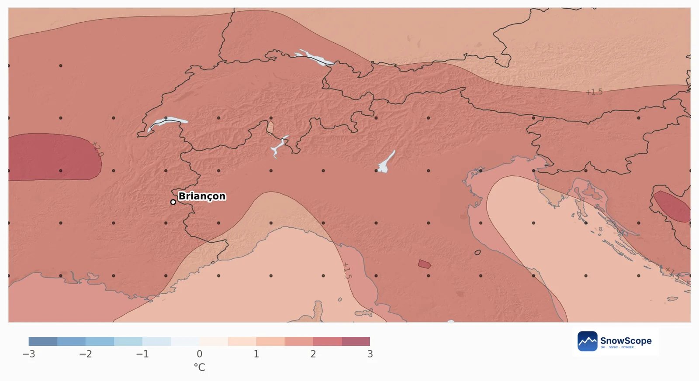
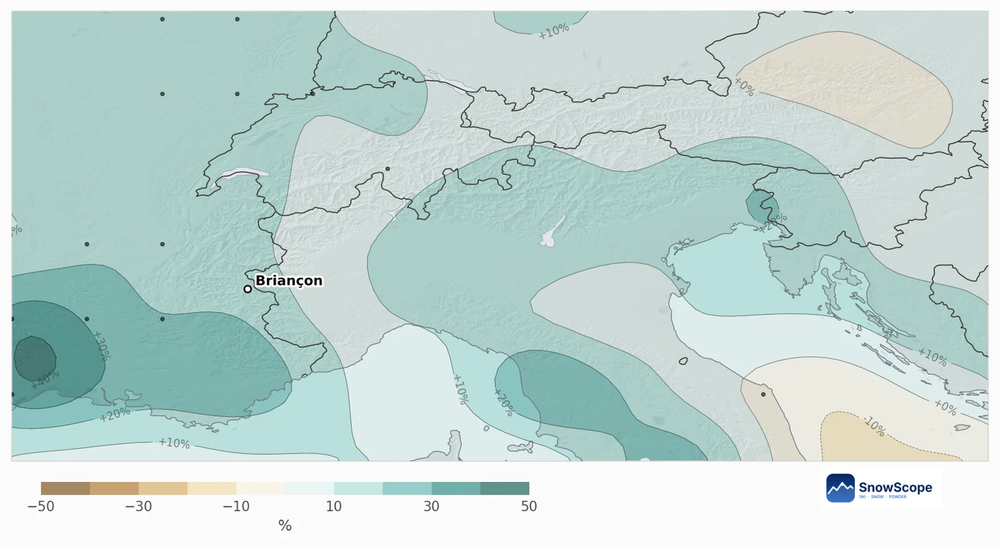

جبال الألب الجنوبية فدجنبر 2026: شهر دافي وفيه الشتا، والخزين ديال التلج قريب من العادي
شوف التلج ديال دجنبر بحال الما اللي كيتخبا للربيع. للألب الجنوبية، التوقع الموسمي كيبين شهر دافي كثر وفيه الشتا كثر؛ الخريطة ديالنا ما لقات حتى إشارة واضحة ف 80% من المنطقة، وغير فالطرف الغربي الفرنسي كاين ميلان لتلج قل.
شوف توقعات التلج مباشرة ديال Southern Alps فالتطبيق ديال SnowScopeالعلو ديال التلج، التنبيهات والخريطة 3D، فابور.
تلج قل فالغرب، وتقريبا فكل بلاصة أخرى والو ما تحسم
كل طرف ديال الجبل، تقريبا 10 كيلومتر، كيتقارن مع الدجنبرات ديالو اللي فاتو. ف 80% ديال الجبل، من Briançon حتى ل Isola 2000 ومن ورا الحدود حتى ل Sestriere و Cuneo، التوقع ما كيقدرش يفرق بين تلج كثر وتلج قل. 20% الباقية مايلة لقل، خصوصا فالغرب قريب من Les 2 Alpes وجيهة Grenoble. حتى منطقة ما مايلة لتلج كثر.
فالمنطقة، الحظ ديال تلج جديد كثر من دجنبر عادي كيمشي من 31% حتى ل 55%؛ والقيمة الوسطى هي 45%.
السخونية والما فالتوقع الأوروبي
النظام الموسمي ديال المركز الأوروبي كيدير 51 حساب. 88% منهم كيعطيو دجنبر سخون كثر من العادة، ب 1.7 درجة فالمتوسط. وكيزيدو حتى الما: الشتا والتلج 14% فوق دجنبر عادي فيه 101 ملم، و61% من الحسابات فيهم الشتا كثر.
بالنسبة للهيدرولوجيا، هادي هي المقايضة المعروفة فجنوب الألب. الهوا الرطب ديال البحر الأبيض المتوسط كيجيب الما؛ لفوق كيتخزن تلج، ولتحت السخونية كتخلي جزء كثر يجري شتا. الربح والخسارة تقريبا كيتعادلو، وداكشي علاش الحظوظ كتبقى قريبة من دجنبر عادي.


فرنسا وإيطاليا جنب لجنب
الألب الجنوبية الفرنسية (Serre Chevalier، Vars و Risoul، Orcières، Valberg، Dévoluy): فالوسط ديال الجبل، دجنبر عادي كيزيد 48 سنتيمتر ديال التلج الجديد، والتوقع 44 سنتيمتر، والحظ باش يفوت العادي 44%. لنهار 31 دجنبر، العادي 62 سنتيمتر؛ والتوقع كيقول 61 سنتيمتر.
Aosta و Piemonte (Courmayeur، Sestriere، Monterosa، Pila): 43 سنتيمتر فدجنبر عادي، و43 سنتيمتر حتى فالتوقع، والحظ ديال كثر 45%. نهار 31 دجنبر عادة كاين 64 سنتيمتر، والتوقع حتى هو كيعطي 64 سنتيمتر. فجوج الجيهات، الدجنبرات اللي فاتو اللي قراب بزاف لهاد التوقع هوما 2023 و2022 و2018.
كيفاش تستعمل توقع بحال هادا
توقع قريب من العادي حتى هو كيقول شي حاجة: ما محتاجش تلغي سفر فدجنبر، وما كاين حتى سبب باش تتسنى شهر قياسي. إشارة السخونية هي الجزء اللي كنتيقو فيه كثر، داكشي علاش فبداية دجنبر المحطات العالية هي الرهان الأضمن.
عقل على الشك: التوقع ديال شهر ما كيشوفش الاضطرابات وحدة بوحدة. ملي التوقع ديال 7 أيام كيبين منخفض ديال البحر الأبيض المتوسط، الألب الجنوبية تقدر تخزن بزاف ديال التلج فنهار ولا جوج.
نصايح للي كيتزلجو
- فبداية دجنبر، ختار محطات فيها تيليسييجات عالية وجهات كتشوف للشمال.
- تبع المنخفضات ديال البحر الأبيض المتوسط فالتوقع ديال 7 أيام: هوما اللي كيجيبو التساقطات الكبيرة ديال التلج فهاد المنطقة.
- قبل ما تحجز، قارن المحطات فالخريطة ديال SnowScope: حد التلج يقدر يتبدل بزاف من واد لواد.
المراجع والمصادر
- ECMWF SEAS5 seasonal forecasts, Copernicus Climate Change Service (C3S) cds.climate.copernicus.eu/datasets/seasonal-postprocessed-single-levels
- ERA5 monthly averaged data, Copernicus Climate Change Service (C3S) cds.climate.copernicus.eu/datasets/reanalysis-era5-single-levels-monthly-means
على هاد الأرقام
الطريقة. الحرارة والشتا: التوقع الموسمي ديال المركز الأوروبي ديال الطقس (ECMWF SEAS5، 51 حساب بداو نهار 1 نونبر 2026، مقارنة مع 1993-2016، شبكة ديال تقريبا 100 كيلومتر). التلج: لكل خانة ديال الجبل ديال تقريبا 10 كيلومتر كناخدو الموديل ديالنا ديال اللي فات (46 شتوة، العلو ديال التلج مصحح بالعلو) والطقس ديال كل دجنبر من 1981 حتى ل 2025 (ERA5)؛ الدجنبرات اللي كيشبهو لكل حساب كيحسبو كثر، والتلج ديالهم كيعطي الحظوظ. التلج ديال اليوم: الخريطة ديال SnowScope (500 متر). التوقع ديال شهر كيبدل غير الحظوظ: ما كيقدرش يتوقع عاصفة ولا تاريخ.
كيفاش تستاشهد بهاد المقال
للبحث، التعليم ولا الصحافة: الأرقام والرسومات تقدر تعاود تخدم بيهم بحرية تحت CC BY 4.0 مع هاد الاستشهاد.
SnowScope (2026), جبال الألب الجنوبية فدجنبر 2026: شهر دافي وفيه الشتا، والخزين ديال التلج قريب من العادي, https://snowscope.app/blog/ar/2026/11/southern-alps-december-2026-snow-outlook.html, تشاف ف 2026-11-10
SnowScope (Atlas Labs). (2026, November 10). جبال الألب الجنوبية فدجنبر 2026: شهر دافي وفيه الشتا، والخزين ديال التلج قريب من العادي. SnowScope snow reports. https://snowscope.app/blog/ar/2026/11/southern-alps-december-2026-snow-outlook.html
BibTeX
@misc{snowscope2026southernalpsdecember2026,
author = {{SnowScope (Atlas Labs)}},
title = {جبال الألب الجنوبية فدجنبر 2026: شهر دافي وفيه الشتا، والخزين ديال التلج قريب من العادي},
year = {2026},
month = nov,
howpublished = {\url{https://snowscope.app/blog/ar/2026/11/southern-alps-december-2026-snow-outlook.html}},
note = {Published 2026-11-10 09:31 UTC; accessed 2026-11-10}
}· CC BY 4.0 · الطريقة، الداتا والأدوات →
تابع Southern Alps
فابور: ميساج ملي يجي التلج، والتوقعات كل صباح.
تقارير أخرى ديال التلج

سبع أيام ف Silvretta Arena، نهار بنهار: فين كاين التلج، إمتى تدوز ل Samnaun، وشنو كيقولو 46 شتوة اللي فاتو على التلج ديال Ischgl ف تلاتة ديال العلوات.

Davos و Klosters كيتقاسمو ستة ديال الجبال ديال التزلج. برنامج نهار بنهار، كيبدا ب Parsenn، مع شنو كيقول التاريخ ديال التلج ديالنا ف 46 شتوة اللي فاتت على العلوات ديالو.

إمتى تحجز Courchevel و 3 Vallées، أشمن قرية تختار وفين كيبقى التلج، من 46 شتوة اللي فاتت.